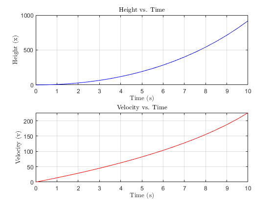
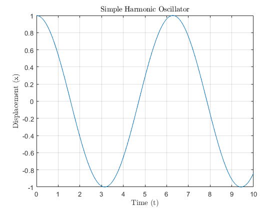

Contents
Q1
clearvars,clc,close all;whos
t0 = 0;
x0 = 1;
t_final = 1;
h = 0.5;
f = @(t, x) t ;
t = t0;
x = x0;
while t < t_final
if t + h > t_final
h = t_final - t;
end
k1 = h * f(t, x);
k2 = h * f(t + h/2, x + k1/2);
k3 = h * f(t + h/2, x + k2/2);
k4 = h * f(t + h, x + k3);
x = x + (k1 + 2*k2 + 2*k3 + k4) / 6;
t = t + h;
end
disp([' value of x(', num2str(t_final), ') = ', num2str(x)])
value of x(1) = 1.5
Q2
clearvars,clc,close all; whos
t0 = 0;
x0 = 0;
v0 = 0;
t_final = 10;
h = 0.5;
t_values = t0:h:t_final;
x_values = zeros(size(t_values));
v_values = zeros(size(t_values));
x_values(1) = x0;
v_values(1) = v0;
for i = 1:length(t_values) - 1
t = t_values(i);
x = x_values(i);
v = v_values(i);
m = 321 - 24 * t;
if m <= 0
break;
end
F = @(v) (5370 - 981 - (v^(3/2) / log(2 + v))) / m;
k1_v = h * F(v);
k1_x = h * v;
k2_v = h * F(v + 0.5 * k1_v);
k2_x = h * (v + 0.5 * k1_v);
k3_v = h * F(v + 0.5 * k2_v);
k3_x = h * (v + 0.5 * k2_v);
k4_v = h * F(v + k3_v);
k4_x = h * (v + k3_v);
v_values(i + 1) = v + (k1_v + 2 * k2_v + 2 * k3_v + k4_v) / 6;
x_values(i + 1) = x + (k1_x + 2 * k2_x + 2 * k3_x + k4_x) / 6;
fprintf('t = %.2f, x = %.4f, v = %.4f\n', t, x_values(i+1), v_values(i+1))
end
figure
subplot(2, 1, 1)
plot(t_values, x_values, 'b-')
xlabel('Time (s)','interpreter','latex')
ylabel('Height (x)','interpreter','latex')
title('Height vs. Time','interpreter','latex')
grid on
subplot(2, 1, 2)
plot(t_values, v_values, 'r-')
xlabel('Time (s)','interpreter','latex')
ylabel('Velocity (v)','interpreter','latex')
title('Velocity vs. Time','interpreter','latex')
grid on
t = 0.00, x = 1.7081, v = 6.8304
t = 0.50, x = 6.8942, v = 13.9108
t = 1.00, x = 15.6872, v = 21.2579
t = 1.50, x = 28.2254, v = 28.8910
t = 2.00, x = 44.6574, v = 36.8322
t = 2.50, x = 65.1435, v = 45.1066
t = 3.00, x = 89.8574, v = 53.7426
t = 3.50, x = 118.9883, v = 62.7731
t = 4.00, x = 152.7426, v = 72.2358
t = 4.50, x = 191.3476, v = 82.1742
t = 5.00, x = 235.0540, v = 92.6396
t = 5.50, x = 284.1402, v = 103.6920
t = 6.00, x = 338.9180, v = 115.4031
t = 6.50, x = 399.7381, v = 127.8590
t = 7.00, x = 466.9997, v = 141.1649
t = 7.50, x = 541.1602, v = 155.4506
t = 8.00, x = 622.7510, v = 170.8800
t = 8.50, x = 712.3969, v = 187.6631
t = 9.00, x = 810.8446, v = 206.0770
t = 9.50, x = 919.0047, v = 226.4974

Q3
clc,clearvars,close all;
ode = @(t, x) sin(x + t^2) ;
tspan = [-4, 4];
x0 = 0;
[t, x] = ode45(ode, tspan, x0);
[x_grid, t_grid] = meshgrid(linspace(-4, 4, 20), linspace(-4, 4, 20));
dxdt = sin(x_grid + t_grid.^2);
dxdt_norm = dxdt ./ sqrt(dxdt.^2 + 1);
disp(' t | x');
disp('--------------');
for i = 1:length(t)
fprintf(' %.2f | %.4f\n', t(i), x(i))
end
figure
hold on
quiver(t_grid, x_grid, ones(size(t_grid)), dxdt_norm, 'r')
plot(t, x, 'b', 'LineWidth', 2)
xlabel('t','interpreter','latex')
ylabel('x','interpreter','latex')
title('Solution and Vector Field of dx/dt = sin(x + t^2)','interpreter','latex')
xlim([-4 4])
ylim([-4 4])
grid on
hold off
t | x
--------------
-4.00 | 0.0000
-4.00 | -0.0001
-4.00 | -0.0001
-4.00 | -0.0001
-4.00 | -0.0002
-4.00 | -0.0004
-4.00 | -0.0007
-4.00 | -0.0009
-4.00 | -0.0011
-3.99 | -0.0022
-3.99 | -0.0031
-3.98 | -0.0038
-3.98 | -0.0044
-3.96 | -0.0050
-3.93 | -0.0018
-3.91 | 0.0048
-3.89 | 0.0147
-3.81 | 0.0747
-3.73 | 0.1534
-3.65 | 0.2289
-3.57 | 0.2808
-3.52 | 0.2927
-3.48 | 0.2927
-3.44 | 0.2805
-3.40 | 0.2568
-3.36 | 0.2237
-3.31 | 0.1844
-3.27 | 0.1428
-3.23 | 0.1029
-3.16 | 0.0520
-3.10 | 0.0252
-3.03 | 0.0260
-2.96 | 0.0525
-2.90 | 0.0988
-2.83 | 0.1583
-2.76 | 0.2242
-2.70 | 0.2902
-2.59 | 0.3790
-2.49 | 0.4349
-2.38 | 0.4447
-2.28 | 0.4043
-2.17 | 0.3088
-2.05 | 0.1965
-1.94 | 0.1030
-1.82 | 0.0517
-1.72 | 0.0483
-1.62 | 0.0787
-1.51 | 0.1356
-1.41 | 0.2116
-1.28 | 0.3237
-1.15 | 0.4466
-1.02 | 0.5742
-0.90 | 0.7027
-0.70 | 0.8933
-0.51 | 1.0817
-0.32 | 1.2700
-0.12 | 1.4600
0.08 | 1.6602
0.28 | 1.8544
0.48 | 2.0270
0.68 | 2.1572
0.88 | 2.2235
1.08 | 2.2155
1.28 | 2.1333
1.48 | 1.9878
1.68 | 1.7996
1.88 | 1.6049
2.08 | 1.4591
2.28 | 1.4345
2.48 | 1.6035
2.68 | 1.7627
2.88 | 1.7372
3.08 | 1.5552
3.17 | 1.4672
3.26 | 1.4023
3.35 | 1.3792
3.44 | 1.4084
3.53 | 1.4868
3.62 | 1.5726
3.71 | 1.6251
3.80 | 1.6219
3.85 | 1.5960
3.90 | 1.5577
3.95 | 1.5115
4.00 | 1.4626

Q4
clc,clearvars,close all; whos
a = 1.5;
c = 0.8;
b = 0.1;
d = 0.1;
x0 = 30;
y0 = 10;
ode = @(t, y) [a*y(1) - b*y(1)*y(2); -c*y(2) + d*y(1)*y(2)];
tspan = [0, 20];
[t, y] = ode45(ode, tspan, [x0; y0]);
figure
subplot(2, 1, 1)
plot(t, y(:, 1), 'b-')
xlabel('Time','interpreter','latex')
ylabel('Prey Population','interpreter','latex')
title('Prey Population vs. Time','interpreter','latex')
grid on
subplot(2, 1, 2)
plot(t, y(:, 2), 'r-')
xlabel('Time','interpreter','latex')
ylabel('Predator Population','interpreter','latex')
title('Predator Population vs. Time','interpreter','latex')
grid on
figure
plot(y(:, 1), y(:, 2), 'm', 'LineWidth', 2)
xlabel('Prey Population','interpreter','latex')
ylabel('Predator Population','interpreter','latex')
title('Phase Plane Plot','interpreter','latex')
grid on


Q5
clc,close all, clearvars, whos
syms x(t) omega
ode = diff(x, t, 2) + omega^2 * x == 0;
sol = dsolve(ode);
disp('General Solution:')
disp(sol)
x0 = sym('x0');
v0 = sym('v0');
Dx = diff(x, t);
conds = [x(0) == x0, Dx(0) == v0];
sol_with_conds = dsolve(ode, conds);
disp('Solution with Initial Conditions:')
disp(sol_with_conds)
x_t = matlabFunction(sol_with_conds, 'Vars', [t, omega, x0, v0]);
omega_val = 1;
x0_val = 1;
v0_val = 0;
t_vals = linspace(0, 10, 1000);
x_vals = x_t(t_vals, omega_val, x0_val, v0_val);
figure
plot(t_vals, x_vals)
xlabel('Time (t)','interpreter','latex')
ylabel('Displacement (x)','interpreter','latex')
title('Simple Harmonic Oscillator','interpreter','latex')
grid on
General Solution:
C1*exp(-omega*t*1i) + C2*exp(omega*t*1i)
Solution with Initial Conditions:
(exp(-omega*t*1i)*(omega*x0 + v0*1i))/(2*omega) - (exp(omega*t*1i)*(- omega*x0 + v0*1i))/(2*omega)
